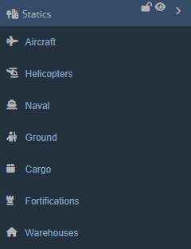

Statics
Work in progress.
Next up are the Statics:

The Statics window looks and works the exact same way as the Units window:

Static Manipulation
Place Statics
From any of the Statics tabs in the Statics window, click and drag a static from the window onto the map to place.
Copy and Paste any static or group of static by selecting them via Shift + LClick + Drag, and then Ctrl + C to copy, Ctrl + V to paste. You can also paste statics by right-clicking on the map and selecting ‘Paste Here’ from the coordinate window.
Select/Deselect Statics
Click on any static to open it’s Statics Panel.
Select statics by Shift + LClick + Dragging the Select Box over the static(s).
Deselect statics with Esc.
Move Statics
Click and drag statics to move them. Statics do not need to be selected to move them with this method.
Select multiple statics with the Select Box and move them using the same method.
Transform Statics
Shift + R will rotate selected statics in random directions.
Shift + Alt + R rotates selected statics to 0 degrees.
Shift + L aligns selected statics along a single axis, using Paste Offset parameters for spacing and direction.
Shift + P randomizes the position of selected statics using Paste Offset parameters.
Shift + G aligns selected statics to a grids, using Paste Offset parameters to build the grid spacing.
Shift + T to transform, scale, and rotate selected statics. Select statics and then press Shift + T to show the Transformation Box. Clicking and dragging within the box will drag the statics. Clicking and dragging edge tabs will scale the statics along that axis. Clicking and dragging just outside a corner tab will allow for rotation of selected statics. Press Esc or RClick anywhere to deselect the statics and Transformation Box.
Delete Statics
Press Del to delete any selected statics.